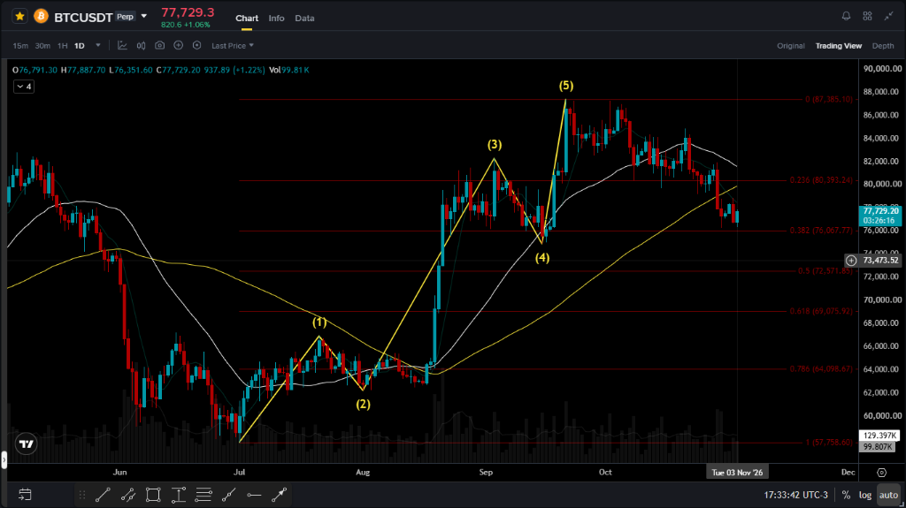
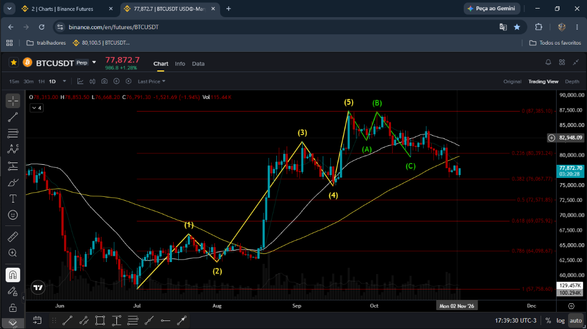
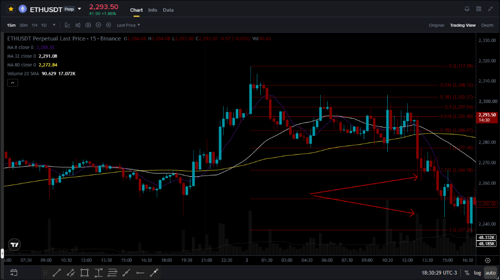
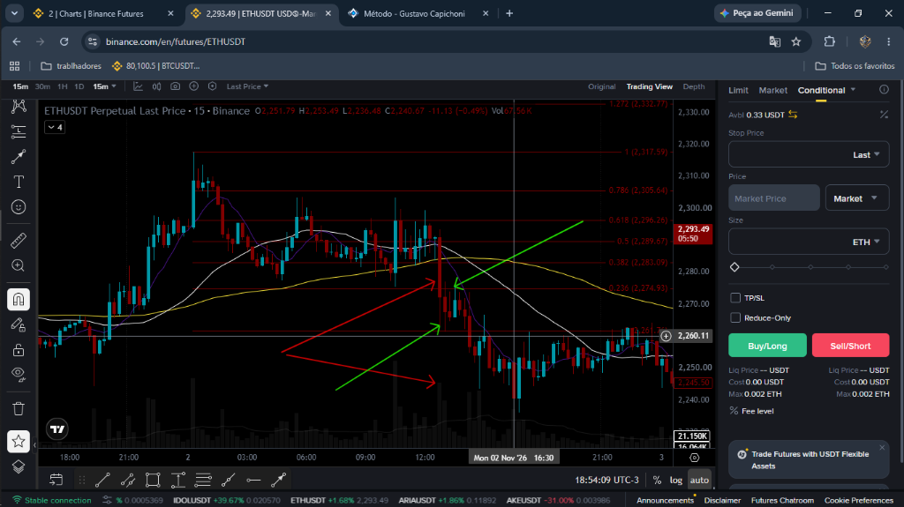
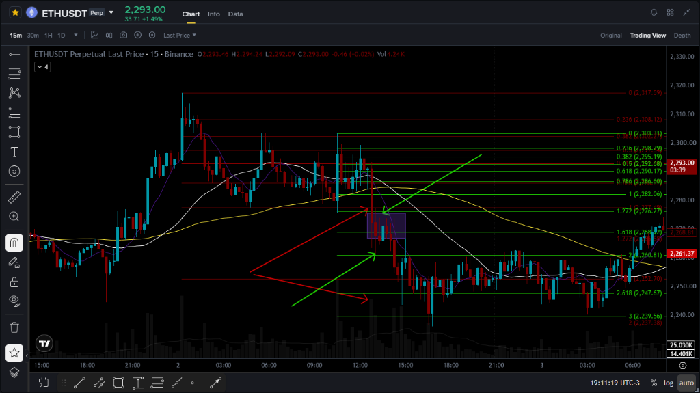
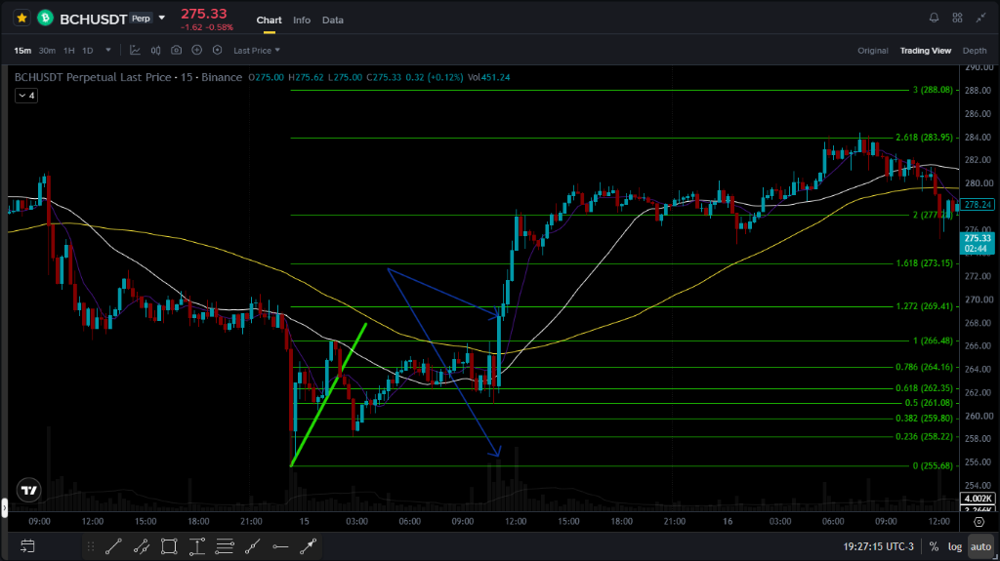
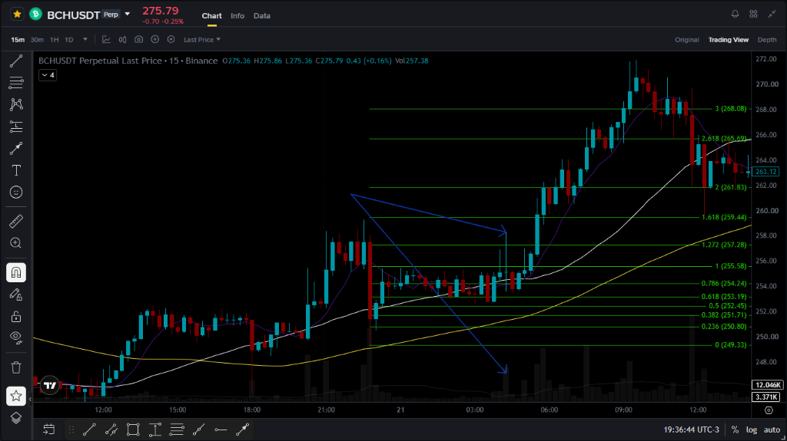
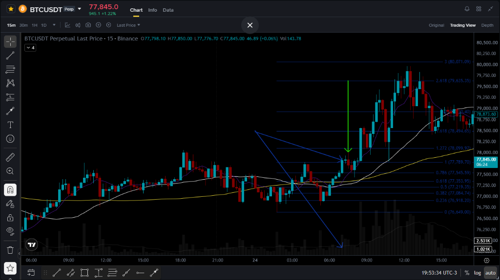

Uma visão aprofundada sobre as escolas conceituais, teorias clássicas e modelos comportamentais
que compõem a base analítica do nosso operacional nos mercados de ativos digitais.
1. Teorias e Escolas que Compõem Nosso Operacional
Nosso operacional não se apoia em palpites, mas sim em teorias robustas desenvolvidas e validadas ao longo de mais de um século
pelos maiores operadores da história dos mercados. Abaixo apresentamos as bases de onde cada modelo nasceu, como grandes traders
as aplicam e como elas convergem no mercado.
1. Teoria de Dow
Charles H. Dow — The Wall Street Journal, 1884–1902
História e Origem
Charles Henry Dow (1851–1902) foi jornalista, editor e cofundador da Dow Jones & Company e do The Wall Street Journal em 1889. Filho de uma família humilde de Connecticut, Dow começou como tipógrafo e repórter, especializando-se em finanças em Boston antes de se mudar para Nova York. Sua metodologia nunca foi publicada em livro — emergiu de editoriais no WSJ entre 1900 e 1902. Após sua morte em 1902, William Peter Hamilton reuniu os artigos no livro "The Stock Market Barometer" (1922) e Robert Rhea sistematizou tudo em "The Dow Theory" (1932). Dow acreditava que os índices de mercado — especialmente o Dow Jones Industrial Average e o Dow Jones Rail Average — funcionavam como barômetros de saúde econômica. A confluência entre os dois índices era para ele o sinal mais confiável de tendência primária.
Os 6 Postulados Fundamentais
A Teoria de Dow se estrutura em seis princípios invioláveis:
O preço desconta tudo. Toda informação disponível — econômica, política, psicológica — já está precificada no mercado. Não há vantagem de informação privilegiada que o preço não reflita.
Existem três tipos de tendência.Primária (meses a anos), secundária (semanas a meses, geralmente retrações de 33%–66% da primária) e terciária (dias, ruído de curto prazo).
As tendências primárias têm três fases.Acumulação (mãos fortes compram silenciosamente), participação pública (a maioria entra — fase de maior velocidade), distribuição (mãos fortes vendem enquanto o varejo ainda compra eufórico).
Os índices devem se confirmar mutuamente. Um sinal de alta no índice industrial sem confirmação do ferroviário (ou vice-versa) não é confiável. Hoje essa lógica se traduz em confirmar setores correlatos.
O volume confirma a tendência. Volume cresce na direção da tendência primária e diminui nas correções secundárias. Divergência de volume é alarme de reversão.
Uma tendência permanece em vigor até reversão confirmada. Topos e fundos ascendentes definem tendência de alta; a quebra dessa estrutura (pivô de baixa confirmado) é o único sinal de reversão válido.
Gestão de Risco e Disciplina Operacional
Dow nunca operou como day trader — ele analisava tendências primárias e secundárias para posicionamentos de semanas a meses. Sua abordagem de risco era simples e poderosa: nunca operar contra a tendência primária. Mesmo num mercado de alta, ele aguardava o término das correções secundárias antes de adicionar posição. O princípio da disciplina era: a tendência existe até que prove o contrário com sinais concretos de mercado — não com base em opiniões ou notícias. Essa postura elimina o erro mais comum do trader iniciante: sair de posições vencedoras prematuramente por medo ou reverter sem confirmação por impaciência.
A Teoria de Dow é a espinha dorsal de toda análise técnica moderna. As obras de John Murphy ("Análise Técnica dos Mercados Financeiros") e Stan Weinstein ("Segredos para lucrar em mercados de alta e de baixa") são extensões diretas desses princípios. No sistema CAPICH, ela atua como filtro macro primário: antes de qualquer entrada, confirmamos que o setup está alinhado com a estrutura de topos e fundos do gráfico diário.
2. Ondas de Elliott
Ralph Nelson Elliott — "Elliott Wave Principle" (Frost & Prechter, 1978)
História: Da Doença à Descoberta
Ralph Nelson Elliott (1871–1948) trabalhou décadas como contador e consultor empresarial na América Central e México. Em 1929, gravemente doente em recuperação de uma anemia perniciosa, ficou acamado por anos. Incapaz de trabalhar, passou a estudar obsessivamente os dados de mercado disponíveis — 75 anos de movimentos históricos do mercado americano, analisando gráficos mensais, semanais, diários, horários e até de 30 minutos. Em 1934, com 63 anos, escreveu uma carta ao analista Charles Collins descrevendo sua descoberta: os mercados se movem em padrões fractais e cíclicos ligados à Sequência de Fibonacci. Collins ficou tão impressionado que o ajudou a publicar o livro "The Wave Principle" em 1938. A obra-prima definitiva viria décadas depois, em 1978, com A.J. Frost e Robert R. Prechter Jr. — o clássico "Elliott Wave Principle: Key to Market Behavior".
Conceitos Centrais e Regras Invioláveis
Elliott descobriu que a psicologia das massas forma padrões fractais e repetitivos. O ciclo completo é o padrão 5-3: 5 ondas impulsivas na direção da tendência dominante + 3 ondas corretivas. Cada onda maior contém o mesmo padrão em escala menor (fractalidade). Três regras são absolutamente invioláveis:
Regra 1: A Onda 2 jamais pode retornar abaixo do início da Onda 1 (se cruzar, a contagem está errada).
Regra 2: A Onda 3 nunca pode ser a menor das três ondas impulsivas (1, 3 e 5). É geralmente a mais extensa e violenta — onde estão os maiores lucros.
Regra 3: A Onda 4 não pode invadir o território de preço da Onda 1 (em mercados convencionais; criptomoedas alavancadas excepcionalmente violam isso).
A ligação com Fibonacci é matemática e direta: a Onda 2 tipicamente retrai 61,8% da Onda 1; a Onda 3 frequentemente se estende em 161,8% ou 261,8% da Onda 1; a Onda 4 retrai 38,2%; e o alvo da Onda 5 converge com extensões de 100% ou 127,2%.
⚠️ REGRA FUNDAMENTAL E INVIOLÁVEL: O PADRÃO DE 5 ONDAS E ALVOS DE FIBONACCI
Para que se opere qualquer projeção ou alvo de Fibonacci (1.272, 1.618 ou 2.618), é absolutamente obrigatório que haja um padrão de 5 ondas de Elliott visível e claro na tela. Sem um ciclo impulsivo limpo de 5 ondas perfeitamente desenhado e nítido aos olhos, NÃO EXISTE operação em alvos de Fibonacci. Tentar projetar alvos sem as 5 ondas nítidas é operar ruído e probabilidade contra.
Gestão de Risco, Disciplina e Psicologia
Elliott era um analista, não um especulador agressivo. A disciplina que suas ondas ensinam é nunca comprar o topo da Onda 5 — a euforia máxima onde o varejo entra em massa — e ter paciência para aguardar o fim das correções de Onda 2 ou 4 para entrar com assimetria máxima. A psicologia embutida no modelo é profunda: a Onda 3 (maior impulsão) é onde o medo de ficar de fora domina as massas; a Onda 5 é onde a ganância substitui a análise. Paul Tudor Jones, um dos maiores traders da história, usou Elliott para prever e lucrar massivamente com o Crash de 1987 — shortando o mercado americano enquanto todos compravam a euforia da Onda 5. No sistema CAPICH, o gráfico diário é lido estruturalmente com Elliott para posicionar o preço dentro do ciclo macro antes de qualquer execução no 1H.
Grandes Traders que a Utilizam
Robert Prechter Jr.Paul Tudor Jones (Crash 1987)Peter BrandtGlenn Neely
Carolyn Boroden começou sua carreira na Chicago Mercantile Exchange na década de 1980, atuando como corretora no pregão físico — um ambiente quase exclusivamente masculino na época. Fascinada pelos padrões numéricos de Fibonacci no comportamento dos preços, dedicou décadas ao refinamento de uma metodologia própria, tornando-se conhecida nos círculos de traders americanos como a "Fibonacci Queen" (Rainha de Fibonacci). Sua obra "Fibonacci Trading: How to Master the Time and Price Advantage" (2008) é considerada a referência mais completa sobre o uso prático de Fibonacci em tempo e preço. Boroden foi analista técnica certificada (CMT) e colaboradora frequente da CNBC e Bloomberg TV.
O Conceito Central: Clusters de Confluência
A grande inovação de Boroden não foi Fibonacci em si — foi o conceito de Cluster de Confluência. Um retração isolada de 61,8% tem valor estatístico moderado. Mas quando múltiplas medições de Fibonacci diferentes convergem na mesma zona de preço — uma retração 61,8% de uma perna + extensão 127,2% de outra + simetria AB=CD — essa zona se torna magneticamente poderosa. Os principais níveis utilizados são:
RETRAÇÕES (Suporte/Resistência)
23,6% · 38,2% · 50% · 61,8% · 78,6%
EXTENSÕES (Alvos de Lucro)
100% · 127,2% · 161,8% · 200% · 261,8%
A Simetria AB=CD é outra ferramenta central de Boroden: quando uma perna de alta (AB) é igual em amplitude e tempo a uma perna futura (CD), o ponto D representa uma zona de reversão altamente provável. Este padrão se repete fractal e consistentemente em todos os mercados e timeframes.
🎯 PREMISSA INEGOCIÁVEL: A MATEMÁTICA DE FIBONACCI EXIGE AS 5 ONDAS
A precisão cirúrgica de Fibonacci não opera no vácuo: a existência de alvos matemáticos depende diretamente da validação do ciclo de 5 ondas. É a impulsão estruturada que fornece os vetores de expansão. Se o operador não enxergar com total nitidez as 5 ondas na tela, Fibonacci não deve ser plotado e nenhuma ordem em alvos de extensão deve ser executada.
Gestão de Risco e Aplicação Prática
Boroden ensina que clusters de Fibonacci devem ser tratados como zonas de decisão, não como pontos exatos. O preço frequentemente penetra levemente o cluster antes de reverter — uma característica que o trader experiente não interpreta como invalidação. O stop técnico é posicionado abaixo do cluster completo (não apenas do nível mais próximo), gerando trades com relação risco/retorno mínima de 1:2. No sistema CAPICH, Fibonacci é o instrumento de precisão cirúrgica: define pontos de entrada, confirma alvos (1,272 → 1,618 → 2,618) e identifica zonas de exaustão para operações de Modelo 03.
Referências e Legado
Larry Pesavento (Padrões Harmônicos)Scott Carney (Gartley, Bat, Butterfly)J.M. Hurst (Ciclos de Fibonacci no Tempo)
4. O Trading System do Ogro — André Machado
André Machado — "O Ogro de Wall Street" — Trader, Analista e Educador
Trajetória e Filosofia
André Machado construiu sua carreira nos mercados financeiros americanos, operando profissionalmente em Nova York e desenvolvendo ao longo de anos uma metodologia robusta baseada em médias móveis, volume e estrutura de preço. De volta ao Brasil, tornou-se um dos mais influentes educadores de trading do mercado brasileiro, com sua metodologia — batizada carinhosamente de Trading System do Ogro — reunindo uma comunidade fiel de dezenas de milhares de traders. Sua filosofia central é direta: "O mercado é simples. Quem complica é o trader." André opera fundamentalmente mini Índice (WIN) e mini Dólar (WDO) na B3, focado no gráfico de 5 minutos para day trade, mas seu método se transpõe fractal e elegantemente para qualquer ativo e timeframe.
O Sistema: As 3 Médias e o Volume
O Trading System do Ogro é construído sobre três médias móveis e a leitura de volume:
MME 9 — Média exponencial rápida. Guia de entrada e saída de posições. Quando o preço respeita e devolve da MME 9, confirma a força da tendência de curto prazo.
MMA 20 — Média aritmética de médio prazo. Suporte/resistência dinâmico de tendência. Cruzamento do preço pela MMA 20 com volume é sinal de força institucional.
MMA 50 — Média aritmética de longo prazo. Define a tendência mãe no timeframe operado. Preço acima = bullish; abaixo = bearish. Ponto de stop técnico definitivo.
Volume — Confirmador de tudo. Rompimento sem volume é armadilha. Barra longa com pico de volume = entrada institucional. Volume decrescente em alta = distribuição silenciosa.
A adaptação CAPICH para criptomoedas no 1H/15m substitui as médias pelo equivalente fractal: MME 8 no 1H = MMA 32 no 15m e MMA 20 no 1H = MMA 80 no 15m. A lógica operacional é idêntica — apenas o ativo e o timeframe mudam.
Gestão de Risco e Disciplina Operacional
André defende uma gestão de risco baseada inteiramente em stops técnicos nas médias — nunca stops financeiros arbitrários. O stop é colocado abaixo da MMA 50 (na adaptação CAPICH: abaixo da MMA 80 do 15m). Isso garante que o trade só é encerrado quando a estrutura técnica que motivou a entrada é invalidada — não por volatilidade aleatória. Outros pilares da sua disciplina:
Respeito ao plano: Se a operação atingiu o stop técnico, ela foi encerrada. Não existe "segurar um pouco mais" ou "mover o stop".
Consistência em horários: Operar apenas nas janelas de maior liquidez e volume institucional. Fora dessas janelas, o mercado é ruído.
Número limitado de trades: Qualidade sobre quantidade. Um trade bem planejado vale mais que dez trades impulsivos.
Não operar em dúvida: Se o setup não está claro e as médias não estão alinhadas, a posição correta é fora do mercado.
Como é Aplicado no Sistema CAPICH
O setup técnico das médias é o filtro tático primário do CAPICH. Antes de qualquer entrada, as três condições de alinhamento devem ser cumpridas: (1) Preço posicionado corretamente em relação à MMA 80; (2) Médias na inclinação favorável à direção operada; (3) Volume de rompimento ou volume de suporte presentes. A partir deste alinhamento, Fibonacci afina o ponto de entrada e o EMPIRE confirma o fluxo institucional por trás do movimento.
5. Psicologia Comportamental — Daniel Kahneman
Daniel Kahneman — Nobel de Economia 2002 — "Rápido e Devagar: Duas Formas de Pensar"
História e a Parceria que Mudou a Economia
Daniel Kahneman (1934–2024) foi psicólogo israelense-americano que revolucionou a economia ao demonstrar matematicamente que os humanos não são agentes racionais. Nascido em Tel Aviv, sobreviveu à ocupação nazista em Paris ainda criança — uma experiência que o fascinou pelos mecanismos do julgamento humano. Em Princeton, formou com seu colega Amos Tversky uma das parcerias científicas mais prolíficas da história. Juntos desenvolveram a Teoria da Perspectiva (Prospect Theory) em 1979, publicada no jornal Econometrica — um artigo citado mais de 50.000 vezes. Em 2002, Kahneman recebeu o Prêmio Nobel de Economia (Tversky havia falecido em 1996). Seu livro popular "Rápido e Devagar: Duas Formas de Pensar" (2011) se tornou best-seller mundial e é leitura obrigatória para qualquer trader sério.
Os Dois Sistemas e os Vieses Cruciais para o Trader
Kahneman descreve a mente humana operando em dois sistemas:
Sistema 1 — Rápido: Automático, emocional, associativo, sem esforço. É ativado instantaneamente quando vemos o preço cair 10% — gera medo e impulso de vender. Ou quando vemos uma vela enorme de alta — gera ganância e impulso de comprar no topo.
Sistema 2 — Devagar: Lento, deliberado, lógico, exige esforço cognitivo. É o sistema que respeita o plano técnico, calcula o risco antes de entrar e aceita o stop quando ele é atingido.
Os vieses cognitivos mais perigosos para o trader identificados por Kahneman e Tversky:
Efeito Disposição: Vender posições vencedoras muito cedo (realizando lucro pequenooo) e segurar as perdedoras indefinidamente (esperando que "volte"). Exatamente o oposto do que a lógica manda.
Heurística da Disponibilidade: Superestimar eventos recentes. Se o mercado caiu ontem, o trader acha que vai cair hoje também — ignorando a estrutura técnica completa.
Heurística da Ancoragem: Prender o julgamento a um número arbitrário. "O BTC era $100k, então $80k está 'barato'" — sem analisar a estrutura técnica real.
Excesso de Confiança (Overconfidence): Após uma sequência de acertos, o trader aumenta o tamanho da posição acima do plano e assume riscos que não cabe ao sistema suportar.
Aversão à Perda: A dor de perder $1.000 é psicologicamente duas vezes mais intensa que o prazer de ganhar $1.000. Isso leva traders a não aceitar stops e transformar small losses em catastrophic losses.
Mark Douglas e a Aplicação Direta no Trading
Mark Douglas ("Trading in the Zone", 2000) traduziu a psicologia de Kahneman e Tversky para a linguagem do trader. Seus ensinamentos são o complemento prático indispensável:
Probabilismo: Cada trade é apenas uma amostra de uma série. O resultado de um único trade não valida nem invalida o sistema. Traders consistentes pensam em populações de trades, não em trades individuais.
Aceitação do Risco: Antes de abrir uma posição, o trader deve ter aceitado completamente a perda máxima possível. Se não aceitar, o Sistema 1 de Kahneman tomará controle no momento de pressão.
Flow State Operacional: O estado ideal é a execução mecânica do plano, sem emoção, sem torcida — idêntico ao estado mental de um cirurgião que não "vibra" durante uma operação, apenas executa o protocolo.
No sistema CAPICH, a psicologia de Kahneman e Douglas se manifesta no protocolo de execução: definir stop e alvos ANTES de entrar, nunca mover o stop para "dar mais espaço" e encerrar a tela após o trade estar posicionado — eliminando o Sistema 1 da equação.
Obras de Referência
Daniel Kahneman — "Rápido e Devagar"Mark Douglas — "Trading in the Zone"Brett Steenbarger — "The Psychology of Trading"Nassim Taleb — "A Lógica do Cisne Negro"
O Indicador EMPIRE é uma metodologia proprietária do sistema CAPICH para medir o fluxo de volume direcional institucional em criptomoedas. ATENÇÃO: As variáveis internas (vwapBuy, vwapSell, intraBuy, intraSell) são identificadores técnicos legados. Este indicador NÃO TEM NADA A VER com VWAP tradicional. Sempre referido e tratado como: INDICADOR EMPIRE.
As 4 Fontes de Dados Paralelas
1. CANDLES FUTUROS
fapi.binance.com · Volume takerBuy e takerSell de cada candle nos contratos perpétuos
2. CANDLES SPOT
api.binance.com · O mesmo, mas no mercado à vista. Mede o fluxo do comprador real, sem alavancagem.
3. OPEN INTEREST
Saldo total de contratos em aberto e delta entre períodos. Mede o posicionamento alavancado acumulado.
4. LONG/SHORT + TAKER
Proporção de contas compradas vs vendidas e quem está agredindo o book. Mede convicção direcional.
Cálculo Central e os Dois Timeframes
O EMPIRE combina as fontes com uma média ponderada 50% Futuros + 50% Spot candle a candle, gerando um buyV e um sellV combinados por período. O saldo líquido = buyV − sellV acumulado define a leitura:
72h — CONTEXTO MACRO
Janela longa. Absorve oscilações e ruído. Mais lento para virar. Representa o posicionamento estrutural dos grandes players institucionais.
8h — GATILHO TÁTICO
Reage imediatamente ao fluxo direcional. Primeiro a sinalizar mudanças de comportamento institucional. É o gatilho de entrada.
As 3 Fases do Ciclo Institucional
Fase 1 — Acumulação Disfarçada: O player vende agressivo para limpar o book, mas sua intenção real é comprar. O 8h pode marcar Distribuição nos momentos de venda agressiva; o 72h, por ser longo, absorve e fica neutro ou levemente em Distribuição.
Fase 2 — Movimento Direcional: O player empurra o preço. O 8h é o primeiro a virar Acumulação — reage imediatamente ao volume direcional. O 72h começa a convergir conforme os candles da Fase 1 saem da janela.
Fase 3 — Distribuição no Topo: O player começa a despejar. O 8h é o primeiro a virar Distribuição — captura o fluxo de saída imediatamente. O 72h ainda mostra Acumulação por alguns períodos (carrega os candles da subida).
Tabela de Divergência — O Sinal Mais Valioso
72h (Macro)
8h (Tático)
Leitura
✅ Acumulação
🔴 Distribuição
⚠️ Topo potencial — smart money saindo
🔴 Distribuição
✅ Acumulação
👀 Fundo potencial — smart money comprando dip
✅ Acumulação
✅ Acumulação
✅ Tendência de alta confirmada — operar comprado
🔴 Distribuição
🔴 Distribuição
🔴 Tendência de baixa confirmada — operar vendido
Limitação Estrutural Conhecida
Quando um player institucional vende agressivo para limpar o book, mas o saldo líquido é comprador (acumulação disfarçada): o sellV sobe, o EMPIRE marca Distribuição — mas a intenção real é Acumulação. Esta é uma limitação estrutural de qualquer indicador baseado em volume agregado. Sem acesso ao order book em profundidade ou dados de fluxo de ordens individuais, esse tipo de manipulação fica mascarado. É exatamente por isso que o EMPIRE é sempre usado em conjunto com as médias móveis e Fibonacci — a convergência dos três filtros eleva a probabilidade mesmo diante dessa limitação.
2. Aplicação Prática e Modelos Operacionais
A transição da teoria para a consistência real. A engenharia técnica de entrada, o setup gráfico completo e os 3 modelos operacionais que regem todas as execuções neste sistema.
PARTE B
Setup Técnico e Engenharia Gráfica
Onde Tudo Começa: O Gráfico Diário (1D) e a Estrutura de 8 Ondas
Apesar de utilizar múltiplos tempos gráficos para contextualização e alinhamento de fluxo, eu não opero o gráfico diário — o meu tempo operacional de execução é o gráfico de 1 Hora (1H) com filtro nos 15 minutos (15m).
Contudo, é no diário onde tudo começa: nele enxergamos a real tendência macro e a localização exata do preço dentro do ciclo.
Quando Ralph Nelson Elliott falou da estrutura clássica de 8 ondas, ele não estava brincando.
Na data de hoje em que faço esta publicação, podemos ver com extrema clareza o gráfico do Bitcoin (BTCUSDT Perp) se movendo com precisão cirúrgica dentro dessa exata estrutura de mercado:
REGRA CARDINAL DE EXECUÇÃO: SEM 5 ONDAS VISÍVEIS, NÃO HÁ ALVO DE FIBONACCI
Grave esta diretriz como o mandamento mais importante da sua vida operacional: para que se opere qualquer alvo ou extensão de Fibonacci (1.272, 1.618, 2.618), é terminantemente necessário que haja um padrão de 5 ondas visível e claro na tela.
Se você abrir o gráfico e tiver que forçar a vista ou hesitar para encontrar as 5 ondas de Elliott, o padrão não existe. Quando o mercado não tem 5 ondas claras, ele está em consolidação caótica, ruído ou acumulação disfarçada. Nesses momentos, Fibonacci é desligado. Operações em alvos de Fibonacci só ganham vida quando as 5 ondas estão desenhadas de forma incontestável diante dos seus olhos.
Imagem 01: As 5 Ondas de Impulso no BTC
Gráfico Diário (1D)

A estrutura impulsiva clássica: Ondas (1), (2), (3), (4) e (5) perfeitamente respeitadas com médias e Fibonacci. Clique na imagem para zoom.
Imagem 02: O Ciclo Completo de 8 Ondas (Impulso + Correção A-B-C)
Gráfico Diário (1D)

A conclusão do ciclo fractal de 8 ondas: as 5 ondas de impulsão seguidas pelo padrão corretivo (A)-(B)-(C). Clique na imagem para zoom.
A Adaptação do Trading System do Ogro: Fractalidade das Médias no Gráfico de 1H e Filtro no 15m
Como aprendi grande parte da minha base operacional com os treinamentos e a metodologia do André Machado ("O Ogro de Wall Street"), meu operacional possui semelhanças diretas com o que ele ensina no consagrado Trading System do Ogro.
A diferença essencial reside no horizonte temporal e na dinâmica do ativo: enquanto o André opera day trade com foco no gráfico de 5 minutos (5m) para índice e dólar, eu opero o mercado de criptomoedas no gráfico de 1 Hora (1H), utilizando o gráfico de 15 minutos (15m) como filtro e sintonia fina de entrada.
Média Rápida FractalGuia de Entrada
Média de 32p no 15mMédia de 8p no 1H
Como 1 hora contém quatro barras de 15 minutos (4 × 15m = 60m), multiplicar 8 períodos por 4 resulta na média de 32 períodos plotada no 15m, refletindo exatamente o suporte dinâmico da média de 8 do 1H.
Média Base FractalDireção de Tendência
Média de 80p no 15mMédia de 20p no 1H
Pelo mesmo princípio fractal (20 períodos × 4), a média de 80 períodos no gráfico de 15m espelha fielmente a média de 20 períodos do 1H, permitindo enxergar a inclinação e o consenso institucional do tempo maior sem mudar de tela.
Duração das operações e postura psicológica: Por operar a inércia e as correções do gráfico de 1H, o tempo de maturação dos trades até atingirem seus alvos técnicos varia consideravelmente. Às vezes o alvo é alcançado em algumas horas; em outras operações de maior amplitude, pode levar 1 a 2 dias. Uma das maiores viradas de chave da consistência é que eu não fico contando o tempo que leva cada operação — o mercado tem seu próprio ritmo e o meu papel é unicamente respeitar o plano técnico até o alvo projetado ou stop.
Aulas de Referência no YouTube (Trading System do Ogro):
Focado em identificar a quebra de estruturas laterais ou a gênese de um pivô primário logo após o rompimento. Busca antecipar a formação do fluxo antes que a maioria dos participantes do mercado perceba a nova direção.
Modelo 02
Continuação de Tendência
Operações a favor da inércia já consolidada. Identificação de correções ordenadas (pullbacks) nas médias móveis de suporte e nos níveis chave de Fibonacci, surfando a próxima perna de impulsão com alta previsibilidade direcional.
Modelo 03 • O Mais Lucrativo
Correção de Tendência (com Potencial de Nova Tendência)
O modelo mais lucrativo de todos. Consiste em operar contra a exaustão da tendência em vigor quando ela atinge clusters extremos de Fibonacci e sobrevenda/sobrecompra nas médias.
Por lidar com reversões precoces e a volatilidade das violinadas, não possui uma taxa de acerto tão alta, mas quando bem operado oferece um payoff (relação Risco x Retorno) incomparável ao capturar a nova tendência desde o primeiro suspiro.
Execução Prática • Modelo 01: Início de Tendência
Como identifico, projeto e executo a gênese de um movimento direcional através de pivôs confirmados e projeções de Fibonacci.
Caso Real 01: O Pivô de Baixa no Gráfico de 15m (ETHUSDT Perp)
⚡ CONDIÇÃO PRÉVIA OBRIGATÓRIA: Padrão de 5 ondas de Elliott visível e claro na tela. Sem isso, NÃO EXISTE operação em alvos de Fibonacci (1.272, 1.618 ou 2.618).
A regra de ouro: Normalmente você só vai enxergar o pivô após ele estar completamente formado. Não vou ficar ensinando conceitos teóricos básicos de análise técnica aqui — a internet já está cheia disso. O que deixo registrado por experiência prática é: nunca tente antecipar um pivô.
Para termos alvos de lucro visíveis e calculáveis, é indispensável que o pivô esteja armado e confirmado por uma barra de rompimento longa e com volume expressivo rompendo a cabeça do pivô. A partir deste ponto exato, começam as projeções de entrada e alvos.
Após o pivô confirmado, espero um dos dois cenários:
• Cenário 1 (Pullback clássico): O preço volta para testar a cabeça do pivô rompida. Às vezes pode até violá-la voltando um pouco para dentro, e deixo ordem de entrada na barra que rompeu, desde que o preço não retorne profundamente para dentro do pivô armado.
• Cenário 2 (Expansão direta no 1.272 — meu favorito): O preço não faz pullback e vai direto cravar o primeiro alvo de Fibonacci em 1.272. É o cenário que mais gosto, pois confirma de imediato que a força vendedora e Fibonacci estão sendo rigorosamente respeitados.
Passo 01: Rompimento com Volume
Etapa 1 • Alvo 1.272

Pivô de baixa armado e rompimento com barra longa de convicção e pico de volume. O preço não perde tempo com pullback e busca diretamente a primeira expansão de Fibonacci em 1.272.
Passo 02: A "Freada" & Gatilho
Etapa 2 • Entrada

Não é preciso que o preço suba até a cabeça do pivô: ocorre uma literal freada na impulsão (vela verde de respiro no 1.272). A entrada na venda é acionada no rompimento da mínima dessa parada.
Passo 03: Alvos & Gestão de Risco
Etapa 3 • Condução

Busca dos alvos de 1.618, 100% do pivô e 2.618 da pernada. No 1.618 a atenção é redobrada: recuos fortes de realização costumam estopar posições contra a tendência diária. Aqui, o alvo final foi cravado com precisão.
Caso Real 02: O Pivô de Alta no Gráfico de 15m (3 Dinâmicas Reais de Mercado)
A regra elementar das médias: A maioria dos livros clássicos de análise técnica afirma uma verdade atemporal: preço acima da média = tendência de alta; preço abaixo da média = tendência de baixa. Isso é universal e válido para qualquer ativo do mercado financeiro.
Em tendências muito fortes e alinhadas a favor da tendência do gráfico diário, o comportamento do pivô de alta assume características marcantes. Muitas vezes o pivô se forma atrás das médias, ou após uma correção curta trabalhando acima delas.
Gestão emocional de incerteza: O mercado de cripto é veloz. Em momentos em que entrar uma volatilidade atípica e você sentir medo, dúvida ou incerteza quanto à sustentação do movimento, a melhor decisão operacional é ficar de fora e esperar pacientemente pela próxima oportunidade.
Exemplo 01: Barra de Ignição & Pablito / Gift
Cenário 1 • Sem Pullback

Em tendências muito fortes, o preço não faz pullback e não dá pausa. As opções são entrar no rompimento da máxima da barra de ignição ou ficar de fora. No exemplo (BCHUSDT), o candle seguinte formou um Pablito / Gift (respiro estreito) antes de explodir para os alvos. Se não romper a máxima de imediato, aguarda-se a formação do Gift.
Exemplo 02: Volatilidade, Doji no 15m & Alvo 2.618
Cenário 2 • Contexto

Um caso muito peculiar: o preço rompe com barra longa e logo volta com forte volatilidade (no 5m causaria pânico de violinada, mas no 15m fechou como um Doji de sustentação após testar o primeiro alvo). O que sustentou a entrada foi o contexto macro de alta. A operação alcançou com precisão a expansão máxima de 2.618.
Exemplo 03: Pullback Clássico na Cabeça do Pivô
Cenário 3 • Maior Lucratividade

O movimento clássico de cartilha (BTCUSDT): o preço rompe a cabeça do pivô, faz um recuo (pullback) adentrando um pouco abaixo da cabeça rompida e não vai direto no 1.272. Esse cenário oferece a melhor relação Risco x Retorno, pois permite pagar mais barato com stop protegido antes da arrancada final.
A Conexão Chave: Por que Todos os 3 Cenários Cravaram o Alvo de 2.618?
Agora repare em um detalhe que conecta toda a teoria com a prática: no pivô de baixa, eu mostrei o mesmo pivô em três etapas cronológicas de execução. Já no pivô de alta, apresentei três cenários de mercado completamente diferentes. O padrão operacional não muda na essência — o mercado apenas se expressa com variações de velocidade e volatilidade.
E se você reparar com atenção nos três exemplos de pivôs de compra, perceberá que todos os três, sem exceção, atingiram o alvo estendido de 2.618 de Fibonacci.
Isso não é coincidência, nem exceção à regra: tem um motivo técnico determinante. Lembra que no início desta página eu mostrei a estrutura macro das 5 ondas de Elliott no Gráfico Diário em pleno mercado altista? Essas operações foram alavancadas porque estavam rigorosamente a favor da tendência do gráfico diário.
Seja em criptomoedas ou em qualquer outro mercado financeiro, quando você opera pivôs no 15m/1H alinhados à inércia da tendência diária, você tem o vento institucional a favor. A força do tempo gráfico maior é o que permite ao preço romper resistências intermediárias e buscar alvos longos como o 2.618 com máxima probabilidade matemática.
Execução Prática • Modelo 02: Continuação de Tendência
Identificar correções saudáveis (pullbacks) nas médias de suporte e surfar a próxima perna de impulsão a favor da inércia já consolidada. Alta taxa de acerto com excelente relação risco/retorno.
Regras de Entrada — Checklist Completo
Padrão de 5 Ondas Visível: Deve haver uma estrutura impulsiva de 5 ondas clara e visível na tela anterior ao pullback. Sem o padrão de 5 ondas nítido, não há projeção nem operação em alvos de Fibonacci.
Tendência Mãe: Preço deve estar acima da MMA 80 (no 15m) ou MMA 20 (no 1H). Esta é a condição sine qua non — sem ela, o modelo não existe.
EMPIRE 72h = Acumulação. O fluxo macro institucional deve confirmar a direção. Se o 72h estiver em Distribuição, a correção pode ser o início de uma reversão — não um pullback.
Pullback saudável: O preço recua até a zona da MMA 32 (15m) ou MMA 8 (1H) sem romper abaixo da MMA 80. Quanto mais limpo o pullback (sem volatilidade excessiva), mais confiável o setup.
Taker não agride: O Taker 5m não deve mostrar pressão contrária superior a 65% durante o pullback. Excesso de agressão sinaliza distribuição, não correção saudável.
Entrada: No primeiro candle bullish que toca e rejeita a MMA 32 — ou no rompimento da máxima desse candle de suporte. No caso de pullback para o 1H: aguarda o candle de 1H fechar acima da MME 8 e entra no rompimento da máxima.
Stop técnico: Abaixo da MMA 80 (15m). Se o preço fechar um candle abaixo da MMA 80, a estrutura foi invalidada.
Alvos: 1,272 da pernada de pullback como alvo parcial (realiza 50% da posição); alvo final = topo anterior ou extensão de 1,618 do pullback.
⚠️ Invalidação: Se o preço fechar um candle abaixo da MMA 80 durante o pullback, o modelo 02 é cancelado. Pode ser o início de um Modelo 03 (reversão) — mas não confunda os dois e não entre prematuramente.
Diagrama: Continuação de Tendência — Pullback na MMA 32
Gráfico 15m · Exemplo Didático
Sequência: Tendência → Pullback toca MMA 32 sem quebrar MMA 80 → Entrada bullish → Stop abaixo MMA 80 → Alvos 1.272 e 1.618. EMPIRE 72h em Acumulação durante todo o processo.
Confluência com o Indicador EMPIRE — Modelo 02
No Modelo 02, o EMPIRE funciona como dupla confirmação: o 72h em Acumulação valida que o pullback é uma correção e não uma reversão; o 8h, que pode estar momentaneamente neutro ou leve durante o pullback, deve virar para Acumulação antes ou no momento da entrada — confirmando que o fluxo tático voltou para a direção da tendência. Quando 72h e 8h convergem em Acumulação enquanto o preço toca a MMA 32: este é um dos setups de maior probabilidade do sistema CAPICH.
Execução Prática • Modelo 03: Correção de Tendência e Reversão
O modelo mais lucrativo — e o mais desafiador. Operar contra a exaustão da tendência em vigor quando ela atinge clusters extremos de Fibonacci. Exige gestão fria, posição reduzida e absoluta disciplina. Quando bem operado: payoff excepcional.
AVISO: Este é o Modelo de Maior Risco Relativo
O Modelo 03 opera contra a tendência dominante. A maioria das "violinadas" (stop-outs falsos) acontece neste modelo. É obrigatório: (1) reduzir o tamanho da posição para 50% do normal, (2) usar stop apertado no nível de Fibonacci imediatamente acima/abaixo, (3) NUNCA realizar médio (nunca comprar mais numa posição perdedora). Um trade no Modelo 03 que viola o stop é simplesmente encerrado — sem emoção, sem negociação interna.
Regras de Entrada — Checklist Completo
Padrão de 5 Ondas de Exaustão: O preço deve ter completado com extrema nitidez as 5 ondas de Elliott da tendência prévia. Sem a estrutura de 5 ondas completada e visível, não existe operação de contra-tendência em Fibonacci.
Extensão de Fibonacci extrema: O preço deve estar em 161,8% ou 261,8% de extensão de um movimento relevante (ou em cluster de confluência com múltiplos Fibs convergindo).
Divergência EMPIRE (sinal mais valioso): O EMPIRE 72h deve estar em conflito com o 8h. Exemplo clássico de topo: 72h = Acumulação (carregando candles da subida), mas 8h = Distribuição (já capturando o fluxo de saída). Esta divergência é o alerta precoce de exaustão.
Taker com pressão contrária superior a 60%: O Taker 5m deve mostrar pressão oposta à tendência. Em topo: vendedores acima de 60%. Em fundo: compradores acima de 60% após a capitulação.
Candle de confirmação obrigatório: Aguardar formação de Doji, Hammer, Engolfo ou Pin Bar no nível de Fibonacci. Nunca entrar sem o candle de reversão formado e fechado.
Posição reduzida: 50% do tamanho padrão. A taxa de acerto deste modelo é menor por natureza — o gerenciamento de posição compensa.
Stop técnico apertado: Acima/abaixo do próximo nível de Fibonacci (ex: se entrou no 161,8%, o stop é acima do 200%). Máximo 5 a 10% da amplitude do movimento relevante.
Alvo: Retração de 61,8% do movimento completo da tendência dominante. Realização parcial em 38,2%. Em caso de reversão completa, conduz para 100% de retração.
Diagrama: Reversão em Cluster de Fibonacci — Exaustão de Tendência
Gráfico 1H · Exemplo Didático
Sequência: Tendência forte → Atinge cluster Fibonacci 161.8% → EMPIRE 8h diverge (Distribuição enquanto 72h ainda em Acumulação) → Doji/Pin Bar → Entrada short → Stop acima 200% → Alvo 38.2% → 61.8% de retração.
A Dimensão Psicológica do Modelo 03 — Kahneman em Prática
Este modelo é onde o Sistema 1 de Kahneman tenta sabotar o trader. A tendência estava forte e o mercado "parece" querer continuar subindo — entrar short parece errado. O FOMO (Fear of Missing Out) é máximo. É exatamente aí que o trader treinado atua: os dados dizem Distribuição, Fibonacci diz exaustão, o Taker diz reversão. A emoção diz para comprar. A execução mecânica diz para vender.
Após a entrada, as violinadas (reversões temporárias voltando contra a posição) são comuns. O antídoto é a preparação prévia: o stop foi definido ANTES da entrada e ele representa a invalidação técnica do setup — não uma preferência emocional. Se o stop é atingido, significa que o cluster foi superado e a tendência continua. Encerra-se a posição e espera-se o próximo nível (200% ou 261,8%) para uma nova tentativa. Nunca média numa posição perdedora do Modelo 03.